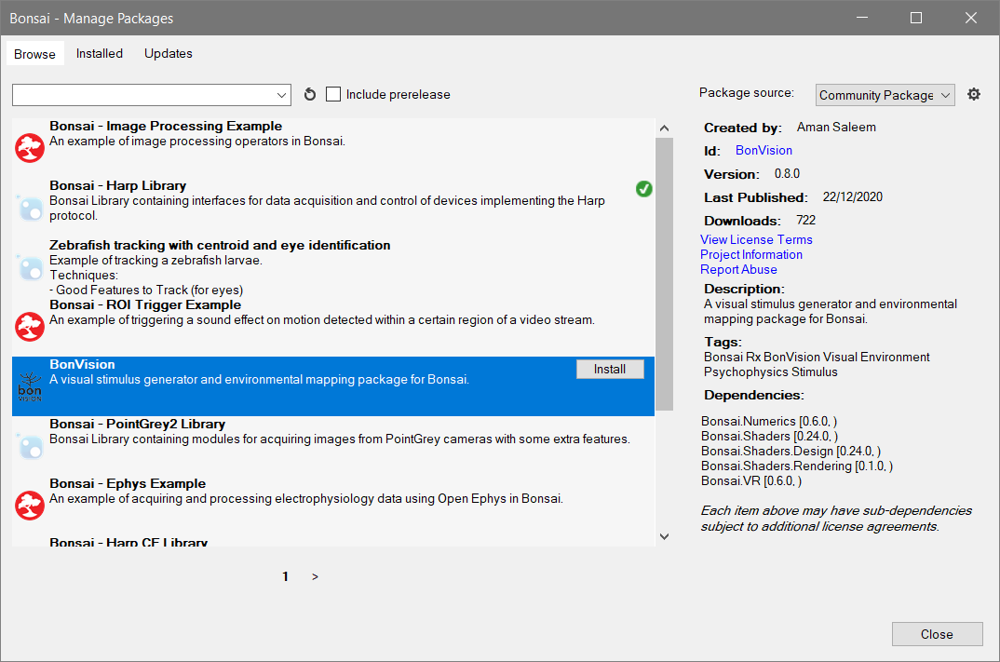

Vision Psychophysics
Getting Started
- Install the BonVision package from the Bonsai Community feed in the package manager. 
- Go through the basic stimuli tutorial at the BonVision website.
Warning
Make sure the latest version of the BonVision package is installed for this worksheet.
Orientation Discrimination
In this worksheet you will build the skeleton of an orientation discrimination vision psychophysics task. In this variant of the task we will present two test gratings in quick succession at different random orientations, and ask the participant to report which of the gratings had the more clockwise orientation. Orientations for each grating will be drawn from a random uniform distribution, and feedback of whether the response was correct or incorrect will be provided visually.
The following set of exercises are to be developed in a single workflow, so do not remove the elements from the previous exercise from subsequent exercises, unless it is specifically mentioned.
Exercise 1: Random Orientation Grating
To allow sharing screen calibration for all displayed task elements, we start by defining a common BonVision render pipeline.

- Insert a
CreateWindowsource and set theClearColorproperty toGray. - Insert the
BonVisionResourcesandLoadResourcesoperators to preload all built-in BonVision shaders. - Insert the
WorkflowOutputoperator afterLoadResourcesto ensure the workflow terminates when the shader window is closed. - Insert a
RenderFramesource. This source will emit a notification when it is time for a new frame to be drawn on the screen. - Insert a
NormalizedViewoperator. This will specify that our stimulus dimensions are resolution independent, aspect ratio corrected, and normalized to the range [-1,1]. - Insert a
PublishSubjectoperator and set itsNameproperty toDraw. We will use these events whenever we need to draw any element on the screen.
The first step in developing our task will be to display a grating in the center of the screen at a random orientation for a specified period of time, and store the value of the orientation, so we can use it later to test the participant.

- Insert a
CreateRandomsource. - Insert a
CreateContinuousUniformand set itsLowerandUpperproperties to -1 and 1, respectively. - Insert an
AsyncSubjectand set its name property toAngleDistribution.
For now, we start by displaying a repeating sequence of random orientation gratings.
- Insert a
Timer (Shaders)source and set itsDueTimeproperty to 2 seconds. - Insert a
SelectManyoperator and set its name toReferenceGrating. - Insert a
Repeatoperator.
Note
The Timer (Shaders) source works exactly like the default Timer (Reactive) source, but it counts the time by using the screen refresh time, rather than the operating system time. This can be important for precise timing of screen stimuli, as it avoid clock drift and jitter when synchronizing multiple visual elements, and should be in general preferred when specifying the various intervals used to control elements in the BonVision or Shaders packages.
To implement the ReferenceGrating state, we will need to sample a random angle from the angle distribution, use it to initialize the angle property of the gratings, and present the gratings for a specified period of time. At the end, we need to send out as a result the value of the random orientation which was generated.
ReferenceGrating:

- Use the
Sample (Numerics)operator to sample a random orientation value from theAngleDistributionsubject and store it in a newAsyncSubjectnamedAngle. This will allow us to reuse the sampled value when drawing the gratings later. - Subscribe to the
Drawsubject we defined previously and insert aDrawGratingsoperator. - Externalize the
Angleproperty from theDrawGratingsnode and connect theAnglesubject we created to it. - Insert a
Timeroperator and set itsDueTimeproperty to 1 second. - Insert a
TakeUntiloperator and connect theDrawGratingsnode as the source, and theTimeras the trigger. - Insert a
Lastoperator. This will ensure we will get a notification whenever theTimerstops the presentation of the stimulus. - Insert a
Sampleoperator following theAngledeclaration, and connect theLastoperator as a trigger. This will store the sampled angle value until it is time to return. - Insert a
WorkflowOutputoperator to specify the final output of the state.
Run the workflow and verify whether the behaviour of the system is correct. Are different orientation values being used for each subsequent presentation of the gratings?
Exercise 2: Reusing stimulus definitions
The second step in defining the contrast discrimination task is to display a second randomly oriented grating in each trial, with a small blank (or masking) period in between. To do this, we want to avoid repeating the entire workflow we designed for our reference grating, so we will make use of the IncludeWorkflow operator to reuse our stimulus presentation logic.
ReferenceGrating:

- Inside the
ReferenceGratingstate, select all nodes beforeWorkflowOutput, right-click the selection, and choose theSave as Workflowoption. ChooseRandomOrientationGratingas the name for the extension.
After we have our new reusable operator, we can extend the workflow to include the blank period and the second grating stimulus.

- Insert a
SelectManyoperator after theReferenceGratingstate and set itsNameproperty toBlank. - Insert another
SelectManyoperator afterBlankwith the nameTestGrating. - Insert a
Repeatoperator.
For the Blank state we will use a simple gap interval where nothing is drawn on the screen. We can do this easily by delaying the transmission of the result of the previous state, before we move on to the next state.
Blank:

- Insert a
Delay (Shaders)operator between the input and the output of the state workflow.
Note
Similar to Timer (Shaders), the Delay (Shaders) operator works exactly like the Delay (Reactive) operator, but using the screen refresh clock instead of the operating system clock. This also ensures that any delayed notifications are resynchronized with the render loop, in case they were emitted from other external devices.
To implement the TestGrating state, we want to reuse our previous RandomOrientationGrating extension workflow and simply combine the random generated angle with the angle from the reference grating.
TestGrating:

- Insert a new
RandomOrientationGratingoperator from the toolbox and combine it with the input by using theZipcombinator. This will generate a pair where the first value is the random angle from the first reference grating, and the second value is the random angle for this test grating.
Run the workflow and validate the random angle pairs are distinct and valid from trial to trial.
Exercise 3: Collect test response and compute trial outcome
Now that we have our two randomly generated gratings, we need to gather the response from the participant and compare it with the actual situation to determine whether the trial was successful.

- Insert a new
Responsestate after theTestGratingstate using theSelectManyoperator.
To implement the response gathering state we will use key presses from the participant. We will use the left and right arrow keys to indicate which stimulus had the most clockwise orientation and compare the response with whether or not the first stimulus was more clockwise than the second stimulus.
Response:

- Connect the
Drawsubject from the toolbox to a newDrawTextoperator and set itsTextproperty to a suggestive question (e.g.A or B?). Also edit theFontproperty and make sure the size is at least 72pt for readability. - Insert a
DelaySubscription (Shaders)operator and set itsDueTimeproperty to 1 second.
Note
As before, the difference with DelaySubscription (Reactive) is that DelaySubscription (Shaders) will use the screen refresh time and make sure that all effects of subscription are synchronized with the render loop.
- Insert a
LessThanoperator after the input source node. This will compare the value of the randomly sampled angles for the first and second gratings, respectively, and will return true if the first grating is more clockwise than the second grating (i.e. its angle in radians is smaller than the second grating). - Insert a
KeyDown (Shaders)source and set itsKeyproperty toLeft. - Insert a
KeyDown (Shaders)source and set itsKeyproperty toRight. - Insert a
Booleanoperator after each of the key press sources and set theValueproperty toTruefor the operator following the left key press. - Combine the results of both key presses with a
Mergeoperator. - Insert a
Firstoperator since we are only interested in the first response from the participant. - Combine the comparison from
LessThanwith the response from the participant using theZipcombinator. - Insert an
Equaloperator to check whether or not the response matches the true angle comparison. This will be the result of theResponsestate and after it is reported, all other effects of the state will be determined (i.e. the question display).
Exercise 4: Present trial outcome feedback to participants
The only step left for finishing our experimental prototype is to report the feedback of each trial back to the participants. We will do this by drawing a colored square, indicating green for a correct response, and red for an incorrect response.

- Insert a new
Feedbackstate after theResponsestate using theSelectManyoperator.
This final state will simply display a quad for a certain period of time, where the color will be modulated by the trial outcome value. We want to store this value until the end of the trial so we can report it for subsequent processing.
Feedback:

- Insert an
AsyncSubjectoperator and set itsNameproperty toResult. This will store the trial outcome result so it can be used to compute the color value of the quad. - Subscribe to the
Drawsubject and insert aDrawQuadoperator. - Externalize the
ColorR,ColorG, andColorBproperties from theDrawQuadnode. - Subscribe to the
Resultsubject and create a newExpressionTransformoperator.
In the Expression property of the ExpressionTransform operator, create a structure holding the RGB color value using the following script:
it ? new(0 as R, 1 as G, 0 as B) : new(1 as R, 0 as G, 0 as B)
- Connect the
ExpressionTransformto the externalized properties. - Insert a
Timeroperator and set itsDueTimeproperty to 1 second. - Insert a
TakeUntiloperator and connect theDrawQuadnode as the source, and theTimeras the trigger. - Insert a
Lastoperator. This will ensure we will get a notification whenever theTimerstops the feedback presentation. - Insert a
Sampleoperator following theResultdeclaration, and connect theLastoperator as a trigger. This will store the trial outcome value until it is time to return. - Connect it to the
WorkflowOutputoperator to specify the final output of the state and trial.
Run the workflow and verify the visual feedback indeed matches the perceived results from each trial.
Exercise 5 (Optional): Measure psychometric data
What is the minimal discrimination threshold for humans in this task? How would you extend the previous workflow in order to assess this?